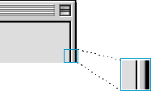

Modeless Dialog Frames
The modeless dialog frame is used in the content region of a modeless dialog box. It is a rectangle with a two-pixel-wide border which shares the inside lines of the document window. This control provides an Appearance-compliant way to distinguish modeless dialogs from other windows. The modeless dialog frame has active and inactive states.Figure 2-44 shows a modeless dialog frame in an active dialog box.
Figure 2-44 A modeless dialog frame in active state
